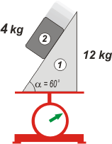

NO ME SALEN
PROBLEMAS RESUELTOS DE FÍSICA DEL CBC
(Leyes de Newton, fuerzas de vínculo) |
|

|
NMS 1.44* - Sobre un plano inclinado (α=60º) de una cuña de 12 kg apoyada sobre una balanza, se desliza un bloque de 4 kg según el dibujo adjunto. Suponiendo rozamiento despreciable entre el bloque y la cuña y suficientemente alto entre la balanza y la cuña como para que ésta no deslice... el valor indicado por la balanza será:
a) 130 N b) 134,64 N
c) 140 N d) 160 N
e) 150 N f) 137,32 N |
 |
|
|
*Este es un problema formó parte del examen libre tomado en Ciudad Universitaria en febrero de 2003.
Como todo problema de dinámica que se precie... hay que comenzar por los DCLs. |
|
|

|
Empecemos con el bloque 2, el de arriba; sobre él obran dos fuerzas exclusivamente: la que ejerce la Tierra atrayéndolo verticalmente, P2, y la fuerza que le hace la cuña de abajo sosteniéndolo parcialmente, F12. Esta última, como se trata de un simple apoyo sin rozamiento, debe ser normal a la superficie de contacto.
Ahora vamos al 1, la cuña; sobre ella actúan: la Tierra, P1, la fuerza que le hace el bloque de arriba que está apoyado en su superficie inclinada, F21, la fuerza con la que la sostiene la balanza, B, (que como también es una fuerza de contacto, también es normal a la superficie de contacto). Y finalmente, el rozamiento con el plato de la balanza, Roz.
Te habrás percatado de que F12 y F21 son un par de acción y reacción (les puse el mismo color, y un nombre orgánico), ya que son el par de la interacción: "contacto entre 1 y 2". |
|
|
|
| Y también te habrás dado cuenta que B es la fuerza que acusa el fiel de la balanza, o sea, la pregunta del ejercicio. |
|
|

|
Para llevar esos vectores a una operación algebraica me conviene descomponer algunos y operar exclusivamente con vectores colineales. Para descomponer los vectores no necesito trabajar con el mismo SR para ambos cuerpos. Es sólo una cuestión de conveniencia.
Para el cuerpo 2 voy a usar un sistema de coordenadas oblicuo (está indicado) y para el cuerpo 1 un sistema vertical y horizontal (también está indicado).
Como hice los esquemas y las descomposiciones con los ángulos apropiados es fácil reconocer cuáles son congruentes con el de inclinación del plano, los 60º. |
|
|
|
De modo que podemos escribir todas las descomposiciones (algunas de ellas no vamos a necesitarlas).
P2Y = P2 . cos 60º
P2X = P2 . sen 60º
F21Y = F21 . cos 60º
F21X = F21 . sen 60º
Ahora sí, vamos a las ecuaciones de Newton para cada eje para cada cuerpo (no todas son necesarias... pero yo me hago el tonto y resuelvo siempre a lo bestia). |
|
|
| Cuerpo 2, eje x |
P2X = m2 . a2 |
[1] |
|
| Cuerpo 2, eje y |
F12 — P2Y = 0 |
[2] |
|
| Cuerpo 1, eje x |
F21X — Roz = 0 |
[3] |
|
| Cuerpo 1, eje y |
B — P1 — F21Y = 0 |
[4] |
|
|
|
|
Las ecuaciones [1] y [3] no aportan demasiado en este ejercicio, pero las otras dos sí; y combinándolas con las de las descomposiciones correspondientes vamos a llegar. Empiezo con la [4]:
B — P1 — F21Y = 0
Reemplazo esa componente...
B — P1 — F21 . cos 60º = 0
Ahora uso la ecuación [2]
B — P1— P2Y . cos 60º = 0
y reemplazo esa componente por su igual:
B — P1— P2 . cos 60º . cos 60º = 0
B = P1 + P2 . cos 60º . cos 60º
B = 120 N + 40 N . 0,5 . 0,5
|
|
|
|
|
|
|
|
|
DISCUSION: Como ves el resultado es un valor menor que el peso de ambos cuerpos sumados, que es lo que indicaría la balanza si los cuerpos estuvieran quietos, digamos... uno atornillado sobre el otro. Pero como una parte del sistema -el bloque- acelera hacia abajo, la fuerza de contacto con la balanza es menor al peso del conjunto.
En el enunciado original, los autores se habían olvidado de fijar la cuña con la fuerza de rozamiento... con lo cual el resultado ni siquiera aparecía entre las opciones... |
|  |
| |
| DESAFIO: ¿Te animás a plantear las ecuaciones sin el rozamiento con la balanza? |
|
| Algunos derechos reservados.
Se permite su reproducción (a todo color) citando la fuente. Última actualización mar-08. Buenos Aires, Argentina. |
|
|
|